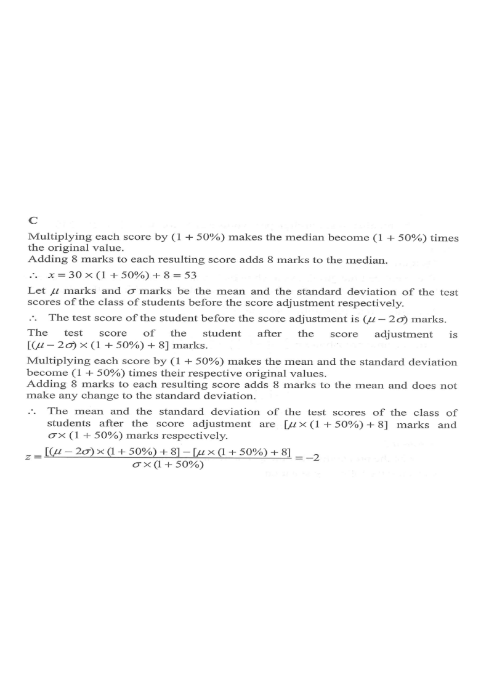

In a test, the median of the test scores of a class of students is 30 marks. All the students fail in the test, so the test score of each student is adjusted such that each score is increased by 50% and then extra 8 marks are added. Let $x$ marks be the median of the test scores of the class of students after the score adjustment. In the test, the standard score of a student before the score adjustment is $-2$.
Denote the standard score of this student after the score adjustment by $z$. Find $x$ and $z$.

Every score is multiplied by $(1+50\%)$ and then 8 is added, so every value (including the median) is transformed the same way:
$$x = 30 \times (1+50\%) + 8 = 30 \times 1.5 + 8 = 45 + 8 = 53.$$Hint: the median is just another data value under a uniform transformation — apply the same map to it.
Let $\mu$ and $\sigma$ be the mean and the standard deviation of the test scores before the adjustment. The student's raw score is then
$$\frac{\text{score}-\mu}{\sigma}=-2 \;\Longrightarrow\; \text{score}=\mu-2\sigma.$$Hint: standard score $z=\dfrac{\text{value}-\text{mean}}{\text{standard deviation}}$.
Multiplying every score by $1+50\%$ multiplies both $\mu$ and $\sigma$ by $(1+50\%)$. Adding 8 to every score adds 8 to the mean but leaves the standard deviation unchanged.
$$\mu' = \mu(1+50\%)+8,\qquad \sigma' = \sigma(1+50\%).$$Hint: shifts do not change spread, but scaling does.
The student's adjusted score is $(\mu-2\sigma)(1+50\%)+8$, so
$$z=\frac{[(\mu-2\sigma)(1+50\%)+8]-\mu'}{\sigma'}.$$Substitute $\mu'=\mu(1+50\%)+8$ and $\sigma'=\sigma(1+50\%)$:
$$z=\frac{[(\mu-2\sigma)(1+50\%)+8]-[\mu(1+50\%)+8]}{\sigma(1+50\%)} =\frac{-2\sigma(1+50\%)}{\sigma(1+50\%)}=-2.$$Hint: the $+8$'s cancel, and the factor $(1+50\%)$ cancels top and bottom — so the standard score is unchanged.
The median becomes $x=53$ and the student's standard score remains $z=-2$.
Hint: a linear transformation $y=ax+b$ with $a>0$ maps every standard score to itself.
Question. In a test, every score is increased by \(20\%\) and then \(5\) marks are added. If the median score before the adjustment is \(40\) and a student has standard score \(-1.5\) before the adjustment, then the new median and the student\u2019s new standard score are A. \(48\) and \(-1.5\) B. \(53\) and \(-1.5\) C. \(53\) and \(-1.8\) D. \(45\) and \(-1.5\) [1 mark]